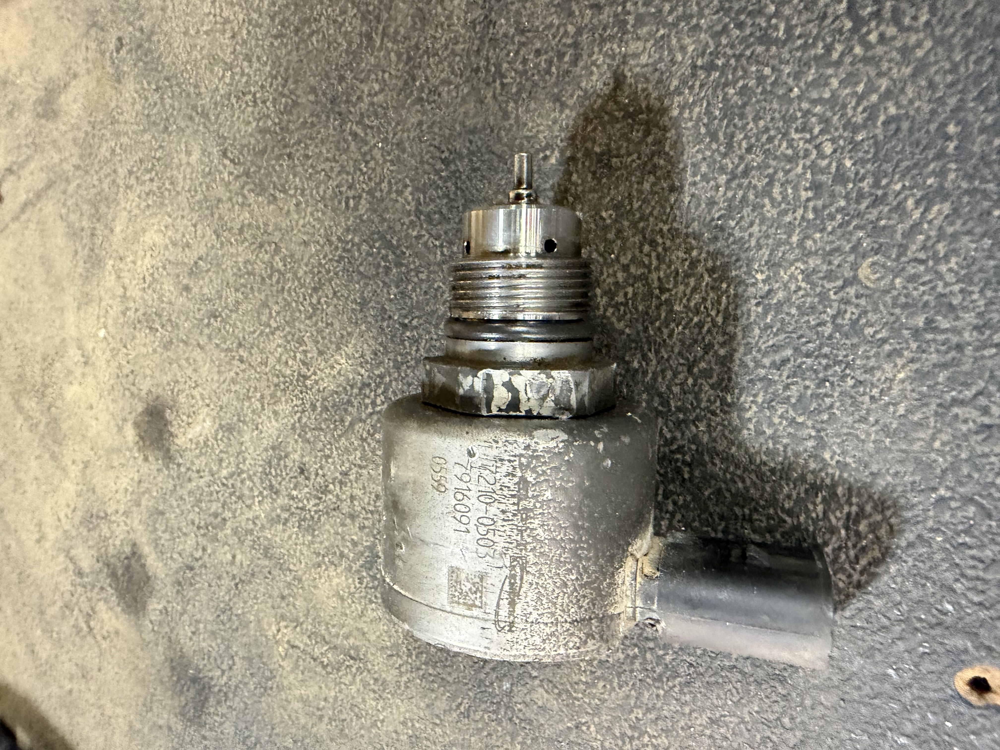
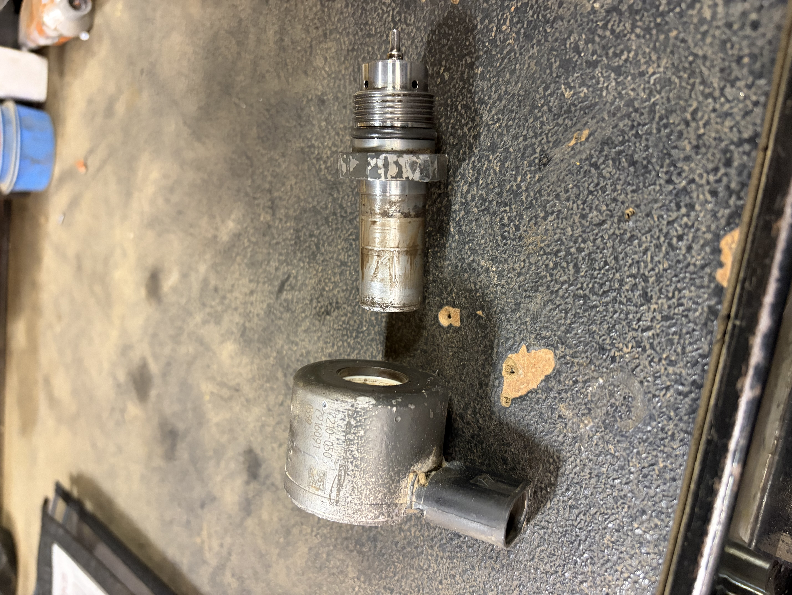

A t880 kenworth with a check engine light and a coolant leak came in this morning. i repaired multiple coolant leaks at loose hose clamps and diagnosed a fuel rail pressure regulator that was intermittently failing.
During my replacement of the fuel pressure regulator, i found that you can remove the snap ring out of the end of the sensor and slide the elecro magnet off to access the retainer nut. This finding is significant because removal of the pressure regulator is difficult because of the extremely low profile nature of the retaining nut.


Safety is a top priority in all my work. Here in the landfill safety is especially important because with the operation of massive offroad equipment come with blindspots both physical and psychological. I see it every day workers who have become complacent with their jobs, and when complacency sets in accidents happen. The photo below shows a method a trash truck operator used to disable the hoist up/backup alarm. Operators do this because they routinely have to stand right infront of the back up alarm and attach the truck's wench the trash 40 yard boxes and without ear protection that damages your hearing. When the safety magnetic switch is bypassed like in the photo pedestrians and other workers are at risk of being run over by the truck because they won't hear the backup alarm. I reported this safety hazard to my supervisor and the company is now looking into a solution to this problem. You haveto wonder why this by pass is done? i suspect that ear protection isnt being supplied to operators and the root of the problem lies with no accountablity in landfill management.